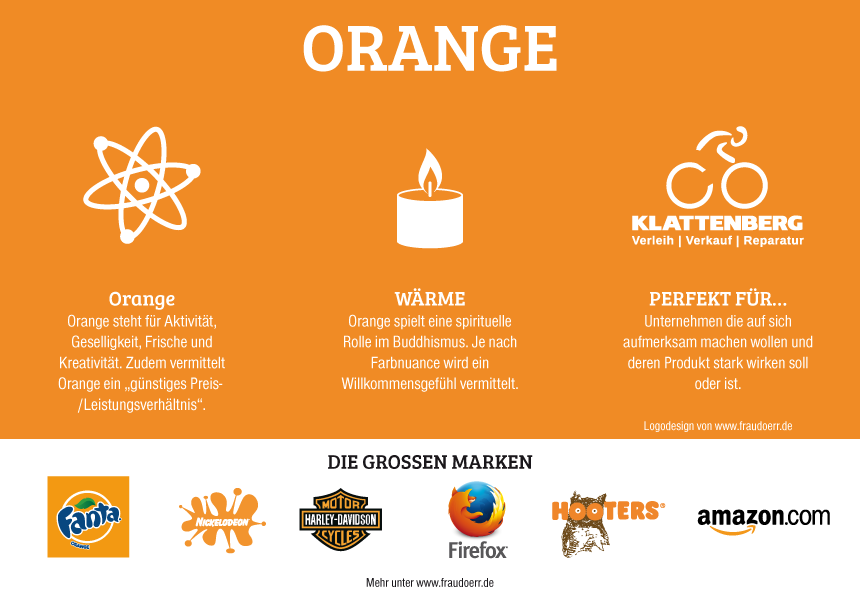
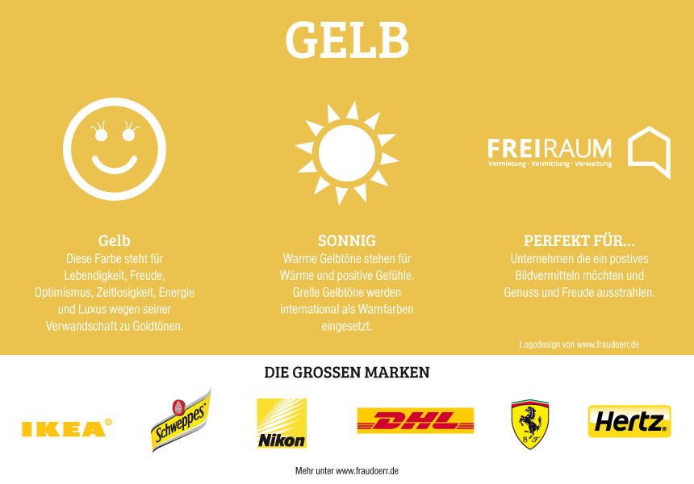
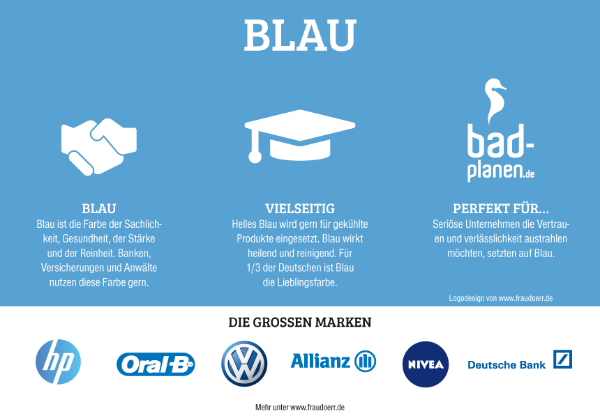

{kind=link}
{kind=link}
{kind=link}
 GRÜN wirkt
lebendig und natürlich.
Natur-, Umwelt- und Gesundheitsthemen werden gerne mit grüner Farbgebung umgesetzt.
GRÜN wirkt
lebendig und natürlich.
Natur-, Umwelt- und Gesundheitsthemen werden gerne mit grüner Farbgebung umgesetzt.
„Am Anfang war das Licht - und damit auch die Farben"
Ohne Licht würden wir keine Farben wahrnehmen und ohne Farben wäre die Welt doch… farblos.
Farben haben eine besondere Wirkung, sie berühren die Sinne, bleiben im Gedächtnis und lösen
Gefühle aus.
Die Psychologie der Farben ist auch für eine Website enorm wichtig, da sie eine bestimmte Funktion erfüllen soll. Mit den falschen Farben versehen, kann es sehr schnell sein, dass nicht der gewünschte Effekt erreicht wird.
Die unterschiedlichen Farbgebungen lösen unterschiedliche Emotionen in der Wahrnehmung aus. Allerdings ist die Farbwahrnehmung subjektiv. In der Farbgebung einer Webseite kann deshalb auch nicht jedes einzelne Individuum berücksichtigt werden. Für dich ist es nur wichtig deine Zielgruppe zu definieren und welche Farben deine Zielgruppe bevorzugt bzw anspricht.
Danach bedienst du dich an den Instrumenten der klassischen Farbenlehre und der Farbpsychologie. Besonders große Unternehmen und Marken beachten diese Kriterien. Zum Beispiel sind Versicherungen meist Blau, da Blau Vertrauen vermittelt.
GRAFIK: Farben und ihre Emotionen
ROT ist eine Signalfarbe. Sie signalisiert Achtung, Feuer, Gefahr. Rot erzeugt Aufmerksamkeit. Was in Rot gestaltet ist, ist ein Hingucker. Rote Elemente wollen auffallen.
 ORANGE steht für Energie, Freude und Wärme. Sie wirkt freundlich und mit ihr beworbene Produkte meistens eher günstiger (billiger).
 GELB wirkt heiter und fröhlich.
GRÜN wirkt
lebendig und natürlich.
Natur-, Umwelt- und Gesundheitsthemen werden gerne mit grüner Farbgebung umgesetzt.
 BLAU ist die typische Business-Farbe, da sie nüchtern, sachlich und vertrauensvoll wirkt. Allzu viel Emotionen kann sie aber nicht vermitteln.
LILA kombiniert die Stabilität des Blaus und die Energie des Rots. Es umgibt eine kreative, phantasievolle, magische Aura.
SCHWARZ kann düster und hemmend wirken. In Designs wirkt es aber sehr kontrastreich (Schwarz auf Weiß) und gibt den Elementen eine besondere Bedeutung.
Die „graue Maus“ unter den Farben ist zurückhaltend, nüchtern, formal und emotionslos. Also auch so eine typische Business-Farbe. Oder als Ergänzung und Kontrast zu einer kräftigen Farbe.
Die Bilder stammen von folgenden Seiten:
https://nithilien.deviantart.com/
https://www.adocom.de
https://www.fraudoerr.de
Created by Mario Ebenhofer
{kind=link}
{kind=link}
{kind=link}
{kind=link}